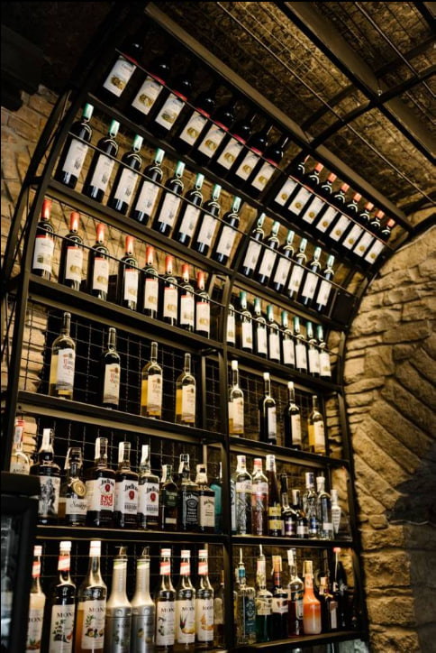
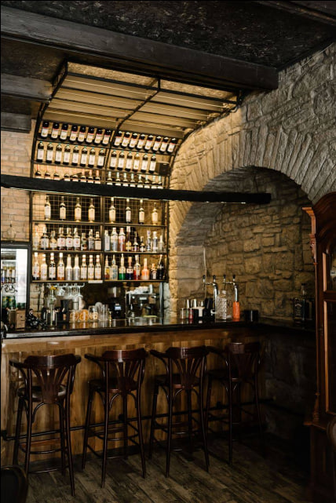

Головний зал
Цегляні арки, теплі відтінки та зручні столи створюють затишну атмосферу для вечірніх зустрічей.
Кам'янець-Подільський · Старе місто
Перегляньте найкращі моменти Old Street — інтер'єри, страви та атмосферу.
Цегляні арки, теплі відтінки та зручні столи створюють затишну атмосферу для вечірніх зустрічей.

Соковитий стейк, красиво поданий з трав'яним маслом та сезонними овочами.

Затишна тераса серед квітів і старовинних будівель для вечірнього відпочинку.

Вишукані десерти з натуральними інгредієнтами — ідеальне завершення вечері.

Підбір вин з усього світу, що доповнює кожну страву.

Наш шеф-кухар готує страви з любов'ю та увагою до кожної деталі.

Простір у стилі старовинного міста з дерев'яними елементами та м'яким освітленням.

Столова сервіровка з натуральними тканинами та декоративними елементами у стилі Old Street.

Освіжаючі напої ручного приготування для легкого початку вечора.

Різноманітність закусок з місцевих продуктів, що задає старт гастрономічної подорожі.

Затишне місце поруч із великими вікнами для спокійного обіду чи вечері.

Кондитерські вишуканості, які не залишать байдужим жодного гостя.

М'яке освітлення та стильні люстри створюють теплий настрій вечора.

Свіжі інгредієнти готуються з увагою до деталей перед подачею гостям.

Авторські позиції меню, натхненні подільською традицією та сучасними смаками.

Професійний бар з авторськими напоями для кожного настрою.

Простір, готовий для свят та особливих подій у компанії друзів.

Чарівний вечір у затишному оточенні старого міста та автентичного стилю.